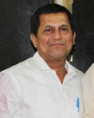

Achyuta Samanta

Samanta was born to Shri Anadi Charan Samanta and Smt.
Nilima Rani Samanta in the village of Kalarabanka in Cuttack District
of Odisha in
1965. His father died when Samanta was four, and he grew up in abject poverty
with his widowed mother and seven siblings.
Samanta received an M.Sc in Chemistry from Utkal
University. He had a decade-long experience in
teaching in colleges, mostly at Maharshi College under Utkal University, in
Bhubaneswar as a chemistry lab assistant.
Educationist
Achyuta Samanta is the founder, ex chancellor, and
secretary of KiiT
University; and the founder of Kalinga
Institute of Social Sciences (KISS), KIIT
International School, Kalinga
Institute of Medical Sciences (KIMS), KIIT
School of Management (KSOM), KIIT
School of Rural Management (KSRM), KIIT
School of Computer Application (KSCA), KIIT
School of Biotechnology (KSBT), KIIT
Law School (KLS), KIIT
School of Languages (KSOL), Kalinga
Institute of Dental Sciences (KIDS) and Kalinga
Polytechnic.
Member of national and International bodies
He is a member of University
Grants Commission (UGC), Executive Committee
Member of All
India Council for Technical Education (AICTE),
Academic Council Member ofCentral
University of Orissa, Serving Member of National
Council for Teacher Education (NCTE), Coir
Board of India, National Executive Council Member
of Indian
Society for Technical Education, and Executive
Committee Member of Indian
Science Congress Association (ISCA)
He was also a serving member of international bodies
including the International
Association of University Presidents (IAUP), United
States of America; Institute
of International Education (IIE), New
York City; Association of University of Asia
Pacific (AUAP); University
Mobility in Asia and the Pacific (UMAP), Bangkok, Thailand; Asia-Pacific
Journal of Public Health (APACPH); United
Nations Academic Impact (UNAI), and Asia Economic
Forum (AEF), CIFEJ (Centre International Du Films Pour L'enfance Et La Jeunesse,
Dubai).
Honoris Causa awards
- Rashtriya Sanskrit Vidyapeetha – Central
University, Tirupati, India − 2011
- Hanseo University, South Korea, 2010
- National University, Cambodia – 2009
- OIU, Colombo – 2002 and 2005 (D.Sc)
- National Formosa University, Taiwan – 2012
- Daffodil International university,
Bangladesh – 2014
- International University of Kyrgyzstan −
2014
- The International School of Medicine,
Bishkek, Kyrgyzstan – 2014
- Kainar University, Almaty, Kazakhstan −
2014
- Chosun University, South Korea – 2014
- Hangai University, Mongolia – 2014
- Soyol Erdem University, Mongolia – 2014
- Naryn State University, Kyrgyzstan – 2014
- Jalalabad State University, Kyrgyzstan –
2014
- Tabriz University, Iran − 2014
- Jalal-Abat State University, Kyrgyzstan –
2014
- Osh State University, Kyrgyzstan – 2014
- Modern University of Humanities, Moscow –
2014
- Talas State University, Kyrgyzstan – 2015
- Issyk- kul State University, Kyrgyzstan –
2015
- Issyk- kul Co-operative Institute,
Korakoll – 2015
- Tajikistan State National University,
Dushanbe – 2015
- Daejeon Institute of Health Science,
Daejeon, Korea – 2015
- Kyrgyz-Uzbek University – 2015
Awards and records
Samanta received a number of awards, and created new
records in the field of social entrepreneurship. He was mentioned among the Top
15 Social Entrepreneurs of the World by the American Edge
Foundation.[3] Samanta
appears in The Limca Book of
Records as the youngest
chancellor of any University in India.
- " Best Worker"
top Civilian Award of Mongolia − 2015
- Highest Civilian award of the kingdom of
Bahrain – Isa Award for Service to Humanity - 2015
- Hall of Fame Award presented by World CSR
Congress, New
Delhi – 2015
- Successful Entrepreneur Award at Economic
Times Entrepreneurship Summit 2015, New
Delhi – 2015
- Civilian Award by Jan
Mládek, Industry & Trade Minister of Czech
Republic, Vladimír Bärtl, Deputy Minister of Industry & Trade Minister of
Czech Republic and M. Stašek, Ambassador of Czech Republic to India at Czech
Embassy, New
Delhi – 2015
- Think India Award by Think Media at
Transforming India Conclave 2014, New
Delhi – 2014
- Honorary Fellowship Award by Computer
Society of India (CSI), Hyderabad,
India – 2014
- Visista Puraskar from 24th Annual Awards –
2014
-
Commonwealth of Independent States (CIS)
Award, Moscow, Russia –
2014
-
Gusi Peace Prize International, Manila,
Philippines – 2014
- ‘2013 World of Difference Awards’ by
US-based International Alliance for Women (TIAW) – 2014
- Lifetime Achievement in Education
Leadership 2013 Presented by Education World 2013
- Kumara Shri 2013 Samman from 'YOUTH', for
exemplary work in the field of Education & Social Service – 2013
- The Highest Prize of Czech
University of Life Sciences Prague (CULS) – A
Sculpture of Honour of the Goddess of Harvest Ops – Prague, Czech
Republic – 2013
- Utkalshree Award 2012
- 15th Bhagwan Mahaveer Award
- Honorary Doctorate for Dr. Samanta by National
Formosa University, Taiwan –
2012
- Qimpro Platinum Standard 2011 Award for
Education – 2012
-
Jawaharlal Nehru Award 2012 – 2012
- Dainik Bhaskar India Pride Award 2011 for
being a Change Agent in the field of Social Development and Equity – 2011
- D.Litt. Degree (Honoris Causa) from
Rashtriya Sanskrit Vidyapeetha (Central University), Tirupati,
Andhra Pradesh – 2011
-
Godfrey Phillips Bravery Award (Social Bravery Award) in
recognition of an exceptional Act of Courage – 2011
- ICON of Odisha 2011 by Times
of India – 2011
- Rajdhani Gaurav Samman – 2011
- Gurudev Rabindranath Tagore Samman – in
recognition of Outstanding Services, Achievements and Contributions – 2011
- 'Ruchi Odisha Gaurav Samman' 2011 – 2011
- National Young EDGE Award – Emerging
Direction in Global Education (EDGE) for outstanding contribution in
Education – 2010
- Asia’s Best Social Entrepreneur Award by
the World HRD Congress conferred on 23 July 2010, Singapore –
2010
- Swami Vivekananda National Award by the
Department of Youth Services and Sports, Government
of Karnataka – 2010
- Gandhi Seva Medal by Gandhi
Global Family in recognition of Philanthropic
and Charitable works for the Downtrodden – 2009
- Nominated for International WISE Awards, Qatar
Foundation, Doha –
2009
- Priya Odiya Samman 2007 (Most Endeared
Personality in Odisha) through a survey by a National TV Channel – 2007
- Placed within 15 best Social Entrepreneur
of the world by Social Edge, an offshoot of Skoll Foundation – 2007
- Youngest Chancellor of any University in
India (Limca Book of Records – 2007) – 2007
- Humanitarian Award from Mahatma Gandhi
Remembrance Organization, Johannesburg, South
Africa – 2004
- Received Awards from Scotland Colleges for
Exemplary Work for the Indigenous People
- First Oriya to receive International Award
for Outstanding Social Work by the Indian Embassy, Muscat,
Oman
- Received ‘Certificate
of Excellence’ in the field of Social Work from the Minister of
International Affairs, Government of Combodia